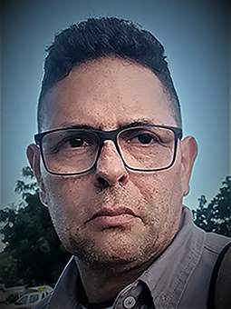

|  |
Pedro Camacho Ortega
|
Soy soldador egresado del SENA, mis prácticas las realicé en DIMANTEC, una contratista de la empresa GECOLSA, donde me asignaron al área de rodaje, en esta área me dediqué durante 10 años a la reconstrucción de los trenes de rodaje de los tractores de oruga CATERPILLAR usando los procesos GMAW, FCAW, SMAW y SAW con estos procesos reconstruíamos las zapatas, rodillos, rueda guía, bastidores, etc
Debido a mi certificación como CWI fuí reasignado al área de aseguramiento de la calidad donde actualmente me encuento trabajando como Técnico Líder en Aseguramiento de la Calidad en la empresa relianz CAT mining solutions.
| Fechas | Trabajos |
|---|---|
| 2007-2017 | Técnico especialista en tren de rodaje |
| 2017-2023 | Técnico líder en aseguramiento de la calidad |
| ingles | 🌞🌞🌞🌞🌞 | alemán | 💚💚💚💚 |
| francés | 🎁🎁🎁🎁 | programación | 🦜🦜🦜 |
link para información de contacto